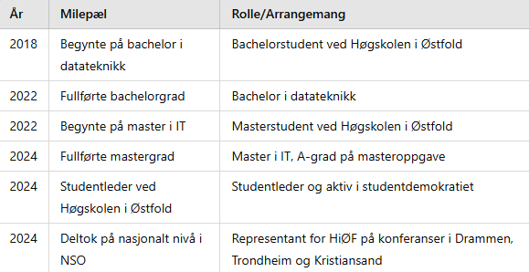
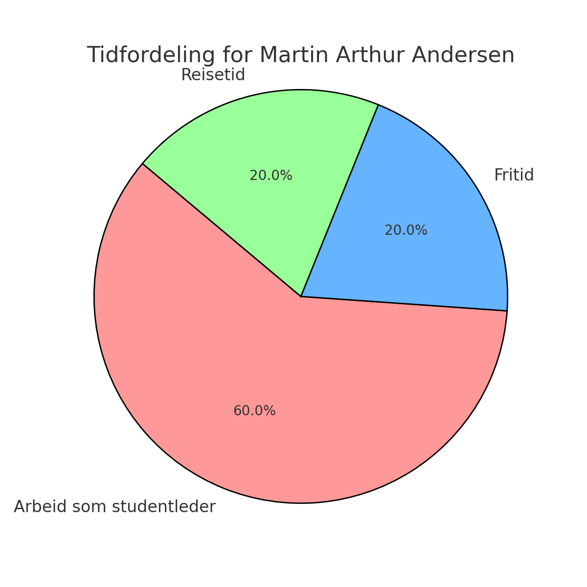
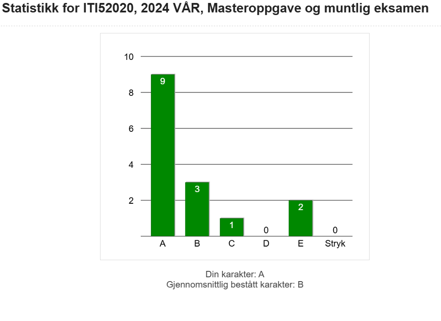
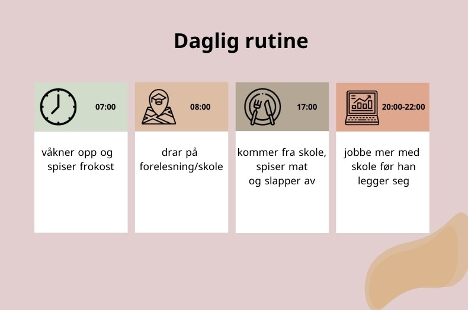

Arthur er et kjent ansikt ved Høgskolen i Østfold, en studentleder og inspirasjon for mange.
Med en bakgrunn fra Ski i Nodre Follo kommune, har han brakt med seg et brennende engasjement for studentenes trivsel og utvikling.
Fra å være en målbevisst IT-masterstudent har Arthur steget til å bli en respektert leder blant sine medstudenter.
Hans engasjement og ambisjon har gjort ham til en rollemodell for mange på høgskolen.
Arthur fikk en imponerende A på sin masteroppgave – en prestasjon som viser hans sterke faglige kompetanse og harde arbeid.
Hans akademiske suksess er et resultat av både lidenskap og dedikasjon til studiene.
Som studentleder ved Høgskolen i Halden arbeider Arthur daglig for å forbedre studentmiljøet.
Hans visjon er å skape en inkluderende og støttende arena hvor alle studenter kan blomstre, både faglig og sosialt.
Studentens reise – Hvordan det hele startet
Martin, 34 år gammel, er opprinnelig fra Ski, men flyttet til Halden i 2018. Han begynte på Høgskolen i Østfold for å studere dataingeniør og fullførte sin bachelorgrad i 2022. Deretter gikk han videre til masterstudiet og ble ferdig i 2024.
Martin forteller at engasjementet hans i studentmiljøet startet som et behov for sosial tilhørighet samtidig som han ønsket å bidra til studentenes stemme.

Tabellen viser en oversikt over viktige milepæler i Martins akademiske og profesjonelle reise. Den starter med hans bachelorstudier i 2018 og fortsetter til hans nylige fullføring av mastergraden i 2024
Studentlederrollen – Hva innebærer det å være studentleder?
Som studentleder på Høgskolen i Østfold er Martin ansvarlig for å organisere arrangementer, støtte studentenes rettigheter og være bindeleddet mellom studentene og administrasjonen. Han har ledet flere prosjekter og bidratt til et mer inkluderende miljø for alle studenter,
og han forteller at det gir ham en følelse av mening.
Hvilken egenskap kreves det å være studentleder?
1. Lederskap – Evnen til å inspirere, motivere og veilede andre studenter er sentralt. En studentleder må kunne ta initiativ og lede prosjekter og møter som bidrar til studentenes beste.
2. Kommunikasjon – Effektiv og tydelig kommunikasjon er avgjørende for å formidle informasjon, lytte til studentenes behov og samarbeide med både studenter og administrasjonen.
3. Konflikthåndtering – En god studentleder må være flink til å megle og løse konflikter på en konstruktiv måte. Dette er viktig for å skape et trygt og inkluderende miljø.
4. Organisasjonsevner – Å holde orden på tidsfrister, møter og arrangementer krever gode organisatoriske ferdigheter. Studentlederen må kunne strukturere oppgaver og arbeide effektivt.
5. Engasjement og empati – En studentleder bør være genuint opptatt av studentvelferd og ha evnen til å forstå og representere andres synspunkter.
En lydklipp fra Martin som forteller hvorfor akkurat han ble valgt som studentleder.
Hvordan ser arbeidsdagen din nå Martin?
Martins arbeidsdag som studentleder er både strukturert og variert. Hver uke følger han en fast rutine, men det er også mye fleksibilitet for å møte de ulike behovene som kan dukke opp. Martins dag starter tidlig, vanligvis rundt kl. 7:30, og han setter av tid til å forberede seg mentalt på dagens møter og oppgaver.
Dette innebærer å gå gjennom kalenderen, sjekke e-post, og gjøre eventuelle siste forberedelser for møter med studenter eller administrasjonen.
Martin jobber fra kl. 9 til kl. 14 på mandag til fredag, og denne perioden er dedikert til alt fra møter med studentorganisasjoner, rådgivning av studenter, til å delta i møter med universitetets administrasjon og ledelse.
En av Martins viktigste arbeidsoppgaver er å være synlig og tilgjengelig for studentene, og derfor er han ofte ute på campus og møter studenter for å diskutere deres bekymringer, ideer, eller utfordringer.
En dag i uka, vanligvis fredag, tilbringer Martin i Fredrikstad for å jobbe med oppgaver knyttet til studentdemokratiet og for å delta i regionale møter. Denne dagen kan være hektisk, men han får også tid til å møte venner og nettverke med andre studenter på tvers av høgskolen.

En diagram som viser hvordan Martin fordeler sin tid som studentleder.
Uventet teknologisk utfordring under et arrangement.
Martin hadde nylig vært med på å organisere et stort seminar for studentene ved Høgskolen i Østfold. Eventet skulle inkludere flere foredrag og en livestream for studenter som ikke kunne delta fysisk. Alt var godt planlagt – eller det trodde Martin. Rett før eventet startet, oppdaget han at teknologien, spesielt lydanlegget og prosjektoren, ikke fungerte som det skulle. Tiden begynte å løpe ut, og han måtte handle raskt.
I stedet for å panikkere, tok Martin det hele med et smil. Han samlet en liten gruppe med studenter og tekniske ansatte for å finne løsningen, men for å lette på stemningen, startet han å improvisere. Han gikk til scenen og begynte å "intervjue" tilfeldige studenter om hva de trodde teknologiske problemer på universitetet egentlig handlet om. Et av spørsmålene han stilte var: "Er det teknologiens feil, eller er det de som har laget den?" Studenten som svarte fikk alle til å le med sin humoristiske kommentar: "Ja, det er nok både vår og teknologiens feil, men vi skal klare det."
Gjennom hele situasjonen holdt han et positivt og humoristisk toneleie. Han fikk publikum til å forstå at teknologiske problemer kan skje, men at det ikke er verdens undergang. Til slutt fikk de fikset problemet og eventet gikk strålende. Flere av studentene som deltok i seminaret, har siden fortalt at de husket Martin for den måten han taklet situasjonen på – med humor og ro, og at han gjorde tekniske problemer til en morsom og minnerik del av opplevelsen.
En lydklipp fra Martin som forteller om denne morsomme hendelsen.
Balansen mellom studier og studentledelse – Hvordan fikk han det til?
For å balansere studiene med studentlederrollen, har Martin brukt kalenderen aktivt for å holde oversikt over avtaler og mål. Med faste rutiner og målsettinger klarer han å strukturere tiden sin effektivt.
Martin har ikke vært noe idrettsgal gutt men " studentdemokratiet ga meg et sosialt miljø og en balanse fra det intense arbeidet med masteroppgaven," sier han.
Fra dette kontoret har Martin ansvar for ca 7000 studenter.
Foto; Ezat Jakob
Kontoret til Martin og steder han har reist som studentleder for å representere Hiøf
Fikk A på masteroppgave
Martins A-oppgave innen bærekraftig teknologi for jordbruk viser hvordan innovasjon kan bidra til det grønne skiftet.
Martins masteroppgave, som fikk karakteren A, fokuserte på en IoT-basert overvåking av jordbærdyrking. Ved å kombinere sensorer og maskinlæringsalgoritmer, utviklet han et system som hjelper bønder med å opprettholde optimale vekstforhold for innendørs jordbær. Oppgaven hans bidrar til bærekraftig landbruk og det grønne skiftet.

Martins A-oppgave innen bærekraftig teknologi for jordbruk viser hvordan innovasjon kan bidra til det grønne skiftet
Hvordan organiserte du arbeidet med oppgaven?
Jeg startet med en grundig planlegging og tidsplan. Jeg delte oppgaven inn i faser, som research, utvikling av systemet, testing og analyse.
Det hjalp meg å holde fokus og prioritere, slik at jeg kunne nå delmålene uten å miste oversikten
Var det noen utfordringer underveis, og hvordan løste du dem?
En av de største utfordringene var å håndtere store datamengder fra sensorene og få algoritmene til å tolke dem på en effektiv måte.
Jeg jobbet mye med datarensing og optimalisering, slik at systemet ble mer presist og mindre ressurskrevend
Hvor mye tid brukte du totalt på masteroppgaven?
Jeg brukte omtrent seks måneder på selve oppgaven, fra idéfasen til innlevering. Dette inkluderte alt fra research, utvikling, testing, og skriving. I gjennomsnitt jobbet jeg 20–30 timer per uke, men i de siste ukene før innlevering brukte jeg gjerne over 40 timer i uka for å få alt på plass

Slik var en vanlig hverdag for Martin når han var student
Fremtiden – Hva nå for Martin
I en samtale med Martin Arthur Andersen spør vi hvordan han ser på veien videre etter suksessen som studentleder ved Høgskolen i Østfold. Martin reflekterer over hva som har vært viktig for ham, og hvilke mål han har satt seg for fremtiden.
Martin, du har oppnådd mye i rollen din som studentleder og gjennom utdanningen din. Hva ser du for deg videre?
Jeg har vært utrolig heldig som har fått så mye ansvar og så mange muligheter her på Høgskolen. Å få representere studentene, både lokalt og nasjonalt, har vært en stor læring. Jeg vil fortsette å jobbe med studentdemokrati og teknologi på en måte som kan påvirke samfunnet positivt
Så du ser for deg en karriere videre innenfor studentdemokrati og ledelse?
"Kanskje! Jeg har alltid hatt et sterkt engasjement for å gi studenter en stemme, og jeg tror at studentdemokratiet har enda mer potensial. Samtidig er jeg veldig interessert i teknologi, og hvordan vi kan bruke det til å bedre studentopplevelsen. Så om mulighetene byr seg, kunne jeg tenke meg en rolle som kombinerer begge deler.
Hva blir viktig for deg å oppnå i årene som kommer?
Først og fremst ønsker jeg å være en ressurs og støtte for andre, slik mine veiledere og kollegaer har vært for meg. Jeg vil jobbe for å skape mer inkluderende miljøer i utdanningsinstitusjoner. Teknologi kan spille en stor rolle i dette, og jeg tror vi bare har sett starten på hva som er mulig å gjøre for studenter og utdanning.
Til slutt, har du noen råd til studenter som ser opp til deg og vurderer å bli med i studentdemokratiet?
Det er fantastisk å kunne bidra! Mitt råd er å ikke være redd for å ta sjanser. Når du engasjerer deg, møter du så mange dyktige og inspirerende mennesker, og du lærer ting som ikke står i pensumbøkene. Og hvis du bryr deg om endring, er studentdemokratiet en god start.
En inspirerende vei videre
Martins reise fra student til studentleder ved Høgskolen i Østfold viser hva engasjement og målrettet arbeid kan oppnå. Gjennom sin innsats har han ikke bare styrket studentmiljøet, men også inspirert andre til å engasjere seg. Nå, med sine erfaringer og ambisjoner, ser han frem til å bidra videre – både i studiemiljøet og i samfunnet for øvrig. Martins historie minner oss om at selv små skritt kan skape store forandringer.
En lydklipp fra Martin som forteller hvor han ser seg om 10år